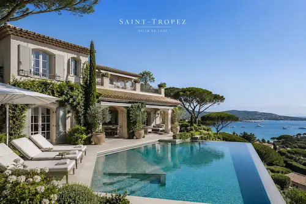
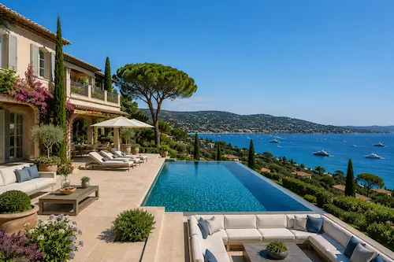
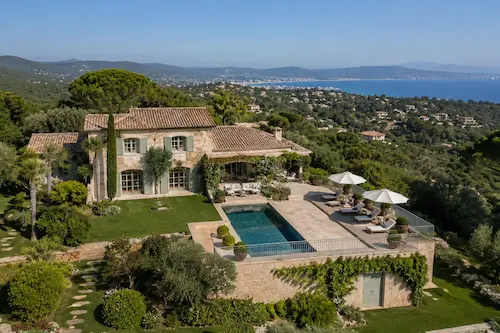
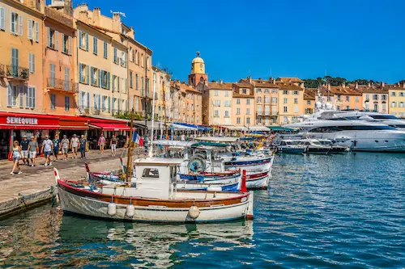

Listings premium — galerie HD plein écran
Fiches biens avec galeries photos haute définition, plans, descriptif complet, prix et localisation précise. Le client visualise la propriété depuis son bureau à Londres avant de planifier sa visite.
Vos acheteurs sont à New York, Londres ou Genève. Ils comparent vos biens sur leurs smartphones avant même de réserver leur vol. Votre site doit sublimer chaque villa, déclencher le contact et positionner votre agence avant vos concurrents sur Google.
Le marché immobilier de Saint-Tropez ne répond pas aux règles de l'immobilier traditionnel. Vos clients exigent l'excellence — votre site aussi.
Qu'il s'agisse d'une bastide provençale cachée à Ramatuelle, d'une propriété contemporaine nichée dans les hauteurs de Gassin, d'une villa pieds dans l'eau à Pampelonne ou d'une demeure d'exception dans les mythiques Parcs de Saint-Tropez — vos clients ne tolèrent aucun compromis. Une clientèle internationale composée d'acquéreurs fortunés, de family offices et de gestionnaires de patrimoine n'accorde que quelques secondes à votre vitrine numérique avant de juger votre crédibilité.
Un site standard ou basé sur des templates génériques dévalorise instantanément l'image de vos propriétés. À l'inverse, une architecture web développée sur mesure transmet les valeurs de votre enseigne — discrétion, luxe, précision, service exceptionnel. Votre site est votre premier rendez-vous avec un acheteur qui n'a pas encore mis le pied dans votre bureau.
Au-delà de l'esthétique, votre site doit être votre outil d'acquisition de mandats le plus performant. Un propriétaire de villa dans les Parcs qui cherche une agence pour vendre sa propriété commence par Google. Sans site visible sur "agence immobilière Saint-Tropez", vous n'existez pas dans cette présélection — quelle que soit votre réputation locale.




Votre agence immobilière de prestige à Saint-Tropez n'achète pas un site vitrine — elle investit dans un outil de valorisation de biens à plusieurs millions d'euros et de génération de leads qualifiés.
Fiches biens avec galeries photos haute définition, plans, descriptif complet, prix et localisation précise. Le client visualise la propriété depuis son bureau à Londres avant de planifier sa visite.
Recherche en temps réel par budget, type de bien, nombre de chambres, localisation (Parcs, port, Pampelonne…). Sans rechargement de page — le client trouve sa villa en 30 secondes.
Synchronisation automatique avec votre logiciel de gestion. Vos annonces se mettent à jour sans double saisie — chaque nouveau mandat est en ligne en quelques minutes.
Vos acheteurs viennent du monde entier. Un site trilingue ou quadrilingue capte les recherches anglophones ("villa for sale Saint-Tropez"), germanophones et italiennes avant vos concurrents.
Formulaire de contact structuré par bien — budget, timing, nationalité. Vous recevez des leads qualifiés avant même le premier appel. WhatsApp pour les contacts internationaux qui évitent les appels.
Galeries HD chargées en lazy-loading WebP nouvelle génération. Score PageSpeed optimisé — votre site immobilier de luxe charge aussi vite qu'un site vitrine simple.
Développeur web basé à Saint-Tropez, je connais ce marché immobilier de l'intérieur. Je connais la différence entre une villa dans les Parcs de Saint-Tropez et une propriété à Gassin — l'environnement, la clientèle, les attentes. Je sais que vos acheteurs de résidences secondaires de luxe viennent de toute l'Europe et des États-Unis, qu'ils consultent votre catalogue depuis leur bureau londonien ou leur yacht amarré au port, et qu'ils ont une exigence esthétique absolue.
Cette connaissance du terrain se traduit directement dans la conception de votre site. Les mots utilisés, les quartiers mis en avant, la façon de présenter Pampelonne versus Le Plan de la Tour, Port Grimaud versus le village de Ramatuelle — chaque détail compte pour une clientèle internationale qui connaît souvent mieux le marché tropézien qu'elle ne le montre.
Le marché immobilier de luxe à Saint-Tropez est l'un des plus concurrentiels de France. Des réseaux internationaux aux agences locales historiques, la bataille pour la visibilité Google est intense. Un vendeur qui hésite entre deux agences pour son mandat va sur Google — et il choisit parmi les trois premiers résultats.
Le SEO local pour une agence immobilière à Saint-Tropez repose sur plusieurs leviers précis : un H1 géolocalisé ("agence immobilière Saint-Tropez"), une fiche Google Business Profile complète et liée à votre site, une structure Schema.org RealEstateAgent qui permet à Google de comprendre exactement votre activité, et des pages de contenu spécifiques aux micro-marchés — villa Ramatuelle, bastide Gassin, propriété Grimaud.
Au-delà du SEO français, votre agence doit capter les recherches internationales — "villa for sale Saint-Tropez", "luxury apartment Saint-Tropez rent", "agence immobilier prestige côte d'azur". Un site multilingue bien structuré avec des balises hreflang vous donne un avantage décisif sur les concurrents qui n'ont qu'une version française.
Une agence immobilière à Saint-Tropez propose souvent plusieurs types de services : vente de biens (résidences principales, secondaires, investissements), location saisonnière de luxe (semaines estivales à fort rendement) et parfois gestion de biens pour les propriétaires non-résidents. Chaque activité a ses propres mots-clés, sa propre clientèle et ses propres objectifs de conversion.
Je conçois votre site en tenant compte de cette réalité — pas une page générique qui parle de tout sans convaincre personne, mais une architecture claire où chaque section convertit un profil de visiteur précis : l'acheteur international qui découvre, le vendeur local qui compare les agences, le locataire VIP qui réserve sa semaine de juillet.
Azur Villa Prestige — site multilingue FR/EN/DE/IT pour l'immobilier de luxe du Golfe de Saint-Tropez. Galerie immersive plein écran, filtres de recherche par type et budget, formulaires leads qualifiés, SEO optimisé pour capter acheteurs et locataires internationaux qui comparent les deux rives.
Performances optimisées desktop et mobile. Fiches villas avec photos haute qualité, descriptifs bilingues et demande de contact en un clic. Le niveau de qualité que je crée pour les agences immobilières du Golfe de Saint-Tropez.
Je connais les Parcs, Pampelonne, le port, les spécificités de chaque micro-marché. Votre site est écrit pour cette clientèle précise — pas pour un immobilier générique.
FR/EN/DE/IT dès la conception. Vos acheteurs britanniques, américains et allemands trouvent votre site dans leur langue — pas une traduction approximative.
Des photos de villas haute définition qui chargent instantanément, sans jamais pénaliser le score PageSpeed. Code à la main, zéro plugin lourd.
FR + EN en SEO natif, hreflang configuré, Schema.org RealEstateAgent. Vous remontez sur "agence immobilière Saint-Tropez" et "villa for sale Saint-Tropez".
Code, contenu, domaine — tout vous appartient. Pas de plateforme propriétaire. Maintenance optionnelle à partir de 60€/mois.
Vous parlez directement avec moi, du brief jusqu'à la mise en ligne. Pas d'agence généraliste, pas d'intermédiaire. Devis sous 24h.
Pas de frais cachés. Un devis avant de commencer. Vous restez propriétaire à 100%.
L'hébergement et le nom de domaine sont à votre charge. Vous restez propriétaire à 100% de votre site.
Le site Web Premium à 1 300€ est idéal pour une agence immobilière qui souhaite un site professionnel avec jusqu'à 6 pages, listings filtrables, galerie haute définition et SEO optimisé page par page. Pour les agences avec un portefeuille important, une clientèle internationale ou un besoin d'intégration CRM (Apimo, Hektor), le Web Ultra sur devis est la solution de référence — multilingue FR/EN/DE/IT, connexion CRM automatique, visite virtuelle intégrée. Devis gratuit sous 24h.
Oui. Synchronisation possible avec Apimo, Hektor, Périclès et d'autres logiciels du secteur. Vos annonces se mettent à jour automatiquement via API — sans double saisie, sans délai.
Oui. SEO local FR (Schema.org RealEstateAgent, Google Business Profile) + SEO international EN avec hreflang. Vous pouvez remonter sur "agence immobilière Saint-Tropez" ET "villa for sale Saint-Tropez".
Oui en option. FR/EN/DE/IT selon votre clientèle cible. La clientèle du marché de Saint-Tropez est majoritairement internationale — un site multilingue est souvent indispensable pour capter les acheteurs étrangers.
Site Premium en 2 à 3 semaines. Site Ultra multilingue avec CRM en 3 à 5 semaines. Délai garanti dans le devis.
Oui. Interface simple pour modifier les fiches biens, prix et disponibilités. Ou synchronisation automatique via votre logiciel CRM existant — vous ne touchez pas au site, les annonces se mettent à jour seules.
Je couvre tout le Golfe de Saint-Tropez — Sainte-Maxime, Grimaud, Ramatuelle, Gassin, Cogolin. Et plus largement le Var avec la page agence immobilière Var.
Développeur freelance basé à Saint-Tropez, je connais le marché immobilier de prestige du Golfe — les quartiers, les produits, la clientèle. Votre site est pensé pour ce marché précis, pas adapté d'un template qui sert aussi les plombiers et les coiffeurs.
Notre page pilier métier — toute l'expertise pour les agences immobilières dans le Var 83, avec nos 3 pages locales dédiées.
→ Page pilier immobilier VarToutes nos expertises web à Saint-Tropez — pour tous les professionnels du Golfe, pas seulement l'immobilier.
→ Page Saint-TropezVotre site agence immobilière existe mais est lent ou vieilli ? Refonte complète — nouveau design, nouvelles performances, SEO remis à plat.
→ Voir la refonteVotre site doit rester disponible 24h/7j et performant. Forfaits maintenance à partir de 60€/mois.
→ Voir la maintenanceDécouvrez nos réalisations pour les professionnels du Golfe — immobilier, restaurants, conciergeries, yachting.
→ Voir le portfolioDevis gratuit sous 24h. Décrivez votre agence, votre portefeuille et vos objectifs — je vous propose une solution sur mesure.
→ Demander mon devisDéveloppeur web spécialisé immobilier de prestige à Saint-Tropez. Devis gratuit sous 24h, maquette avant de commencer, délai garanti.
Création site internet agence immobilière Saint-Tropez · Développeur web immobilier luxe Saint-Tropez · Site immobilier prestige Golfe Saint-Tropez · Agence web immobilier Var 83